Студенческая учебно-научная лаборатория «Юридическая клиника» (далее – СУНЛ) образована в январе 2003 года на базе юридического факультета учреждения образования «Гомельский государственный университет имени Франциска Скорины», существует как структура НИРС университета с 2006 года, на основании приказа ректора.
Однако, в самом начале деятельности были заложены стандарты, которые используются и поддерживаются на протяжении всего периода существования ЮК. Большой вклад был сделан ABA/CEELI благодаря тренингам, конференциям и встречам которые позволили перенять опыт ЮК РФ и Украины, а также обеспечивали постоянный обмен информацией между ЮК всех регионов Беларуси.
Участниками СУНЛ являются студенты 2-4 курсов. Ежегодно происходит процесс обновления участников за счет студентов 2 курса.
Структуру СУНЛ образуют:
1. Юридическая клиника общего направления;
2. Клиника «Живое право»
кураторами СУНЛ является – преподаватели Пасынков А.В, Денисенко Н.В. Тимошенко М.В.
Основными задачами лаборатории являются:
1. Развитие профессиональных навыков у студентов – будущих юристов.
2. Формирование у студентов таких необходимых качеств, как ответственность, патриотизм, гуманизм, коммуникабельность и др.
3. Воспитание у подростков правовой культуры в целях профилактики правонарушений.
4. Оказание правовой помощи малоимущим и иным социально незащищенным слоям населения.
5. Участие в научно-исследовательской работе университета.
Основной метод работы СУНЛ «Юридическая клиника» – интерактивное обучение студентов приемам решения конкретных правовых ситуаций. Он направлен на приобретение навыков не только в области будущей профессиональной деятельности, но и в области научной работы, развитие творческой активности, наращивание интеллектуального потенциала и идеологического воспитания.
Направления деятельности:
1. Основное направление деятельности – консультирование граждан.
Правовое консультирование граждан отражает стремление юридического факультета в реализации различных социальных программ.
Главным содержанием данной деятельности является оказание малоимущим и социально незащищенным слоям населения (таким как пенсионеры, безработные, осужденные, несовершеннолетние, учащиеся различных учебных заведений, будущие и молодые матери и т.п.) бесплатной юридической помощи в виде правовых консультаций.
Консультирование граждан из различных социальных групп осуществляется на общественных началах студентами-юристами старших курсов (2-4 курсы) под руководством опытных преподавателей и практикующих адвокатов.
Студенты-клиницисты совмещают теоретическое обучение с получением практических навыков и опыта по консультированию граждан, общению с клиентами, технике юридического письма и многому другому.
2. «Адвокат по переписке»
Назначение программы «Адвокат по переписке» – ответы на письма осужденных, отбывающих наказание в местах лишения свободы Республики Беларусь.
Данная категория лиц не получает юридической помощи по месту отбытия своего наказания. Поэтому программа является для них одной из немногих возможностей получить квалифицированную и достаточно скорую юридическую помощь. Граждане присылают письма с вопросами со всей территории страны.
3. «Живое право»
Проект «Живое право» возник в 2005 г. в рамках Юридической клиники как секция, занимающаяся подготовкой студентов младших курсов.
После прохождения обучения в секции «Живое право» студенты становятся участниками Юридической клиники. Именно такое поэтапное обучение обеспечивает наибольшую эффективность.
Куратор секции «Живое право» – старший преподаватель кафедры политологии и социологии Тимошенко М.В.
Основные виды деятельности секции "Живое право":
1. Подготовка студентов-юристов для преподавания права.
2. Преподавание права в школах и общественных организациях.
В период с 2003 года по настоящее время было подготовлено более 2000 ответов на обращения граждан, а также на письма в рамках направления деятельности «Адвокат по переписке».
Наши Студенты-клиницисты
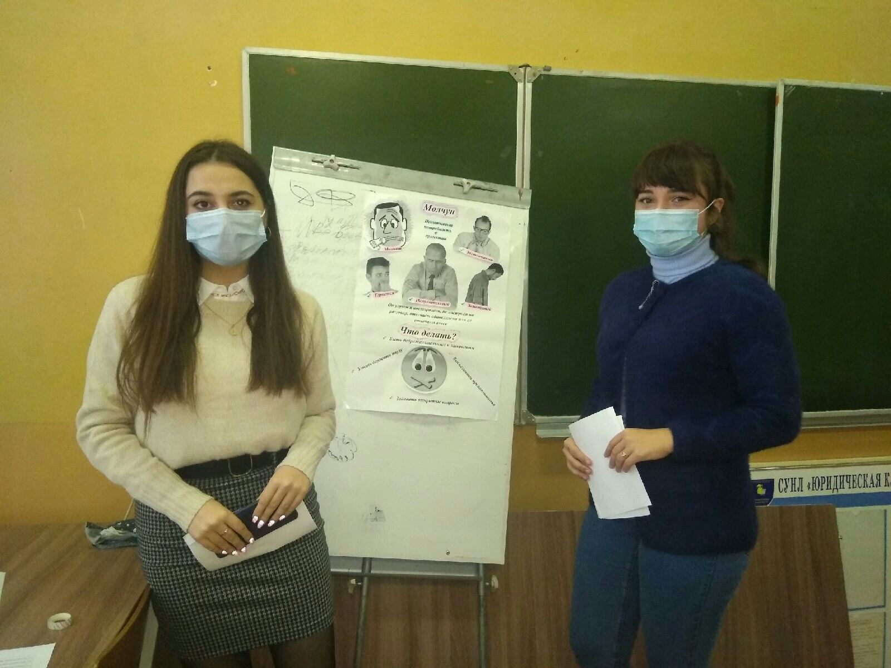
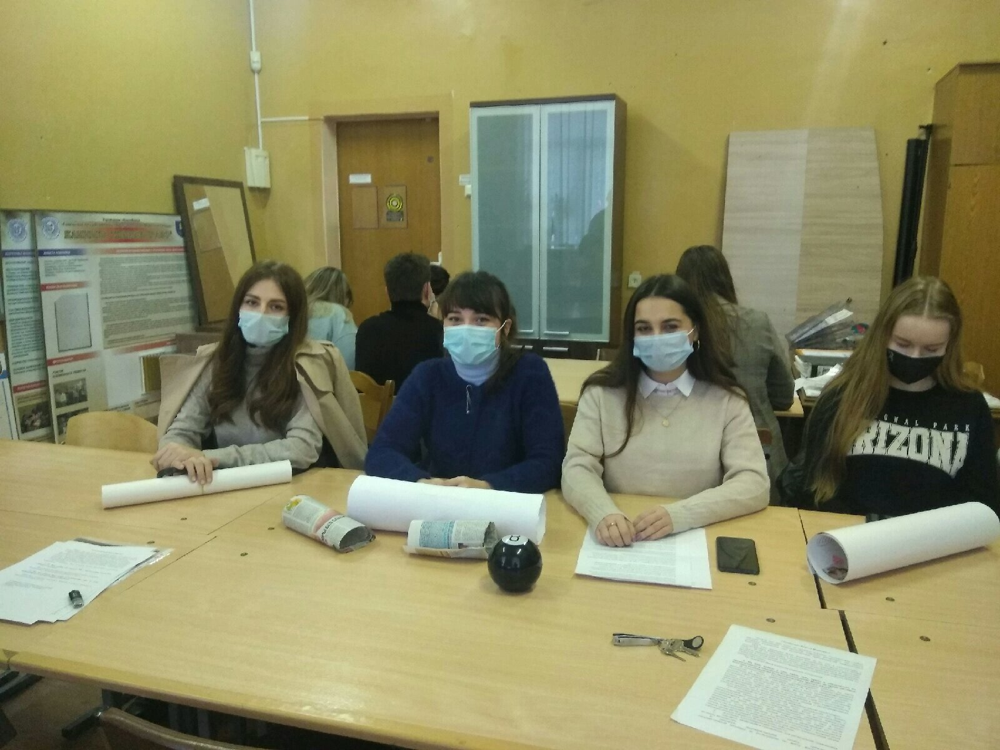
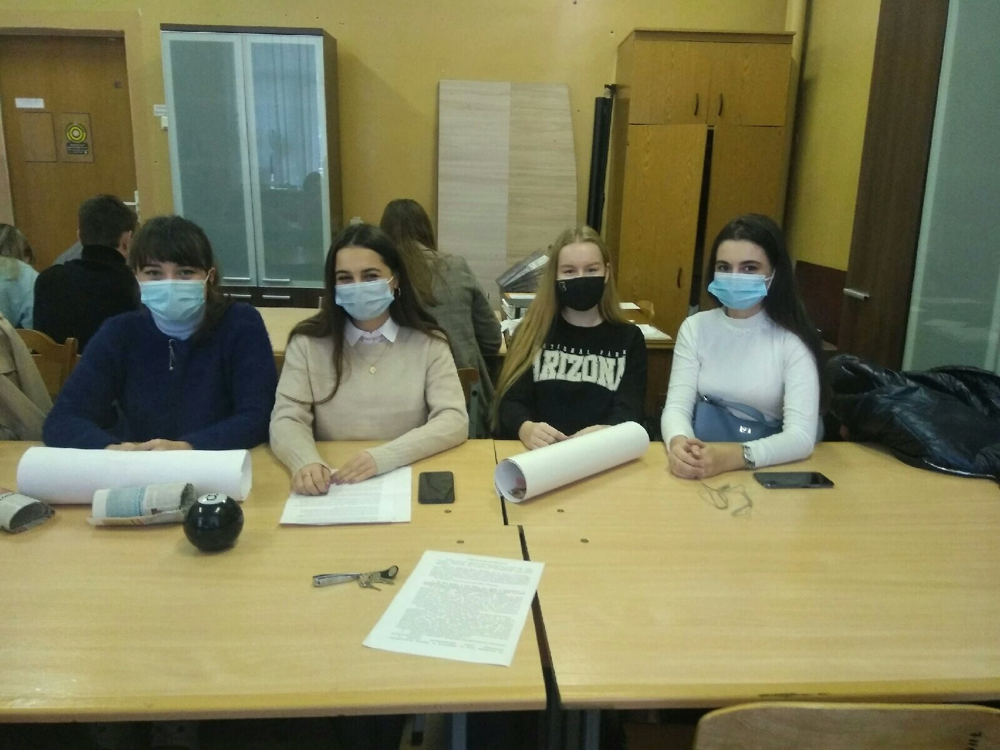
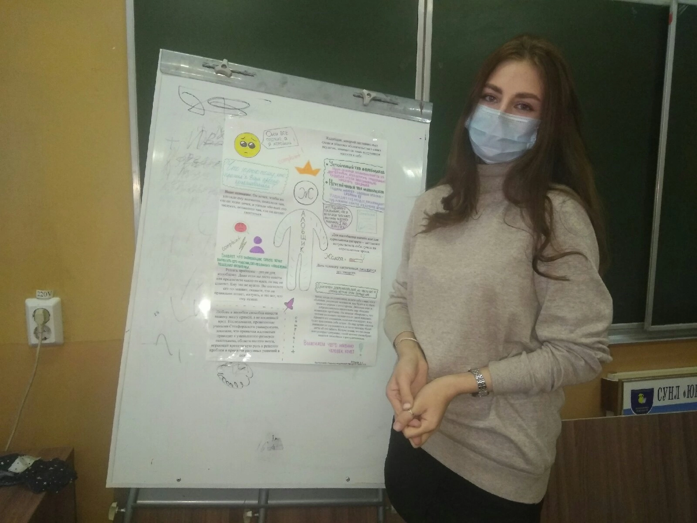
 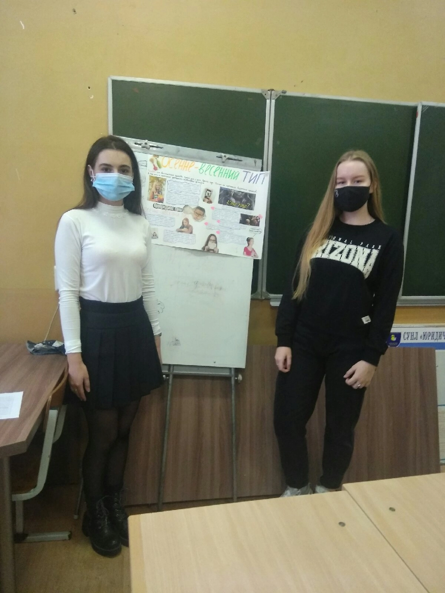
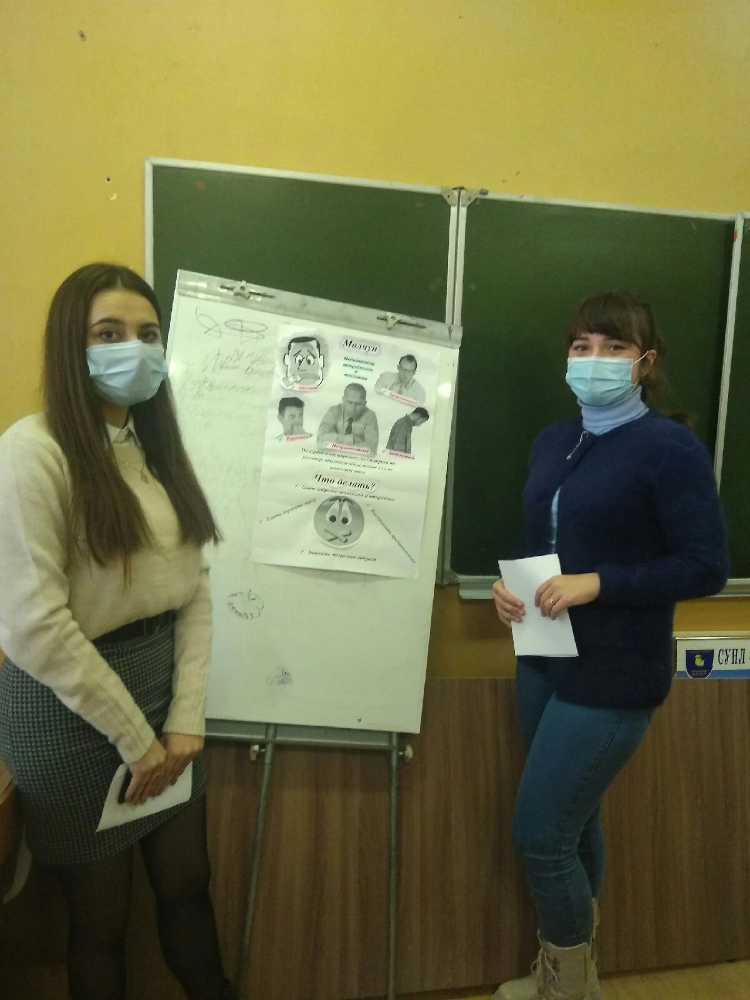
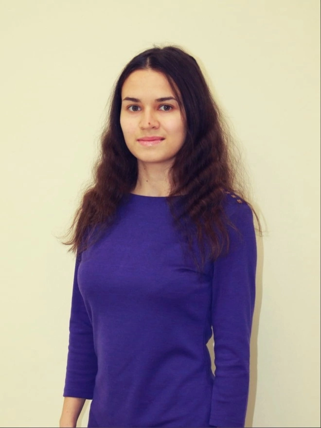
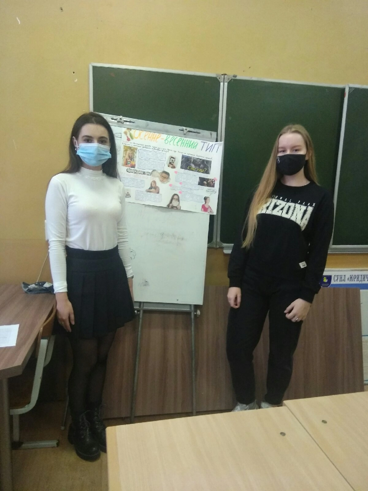
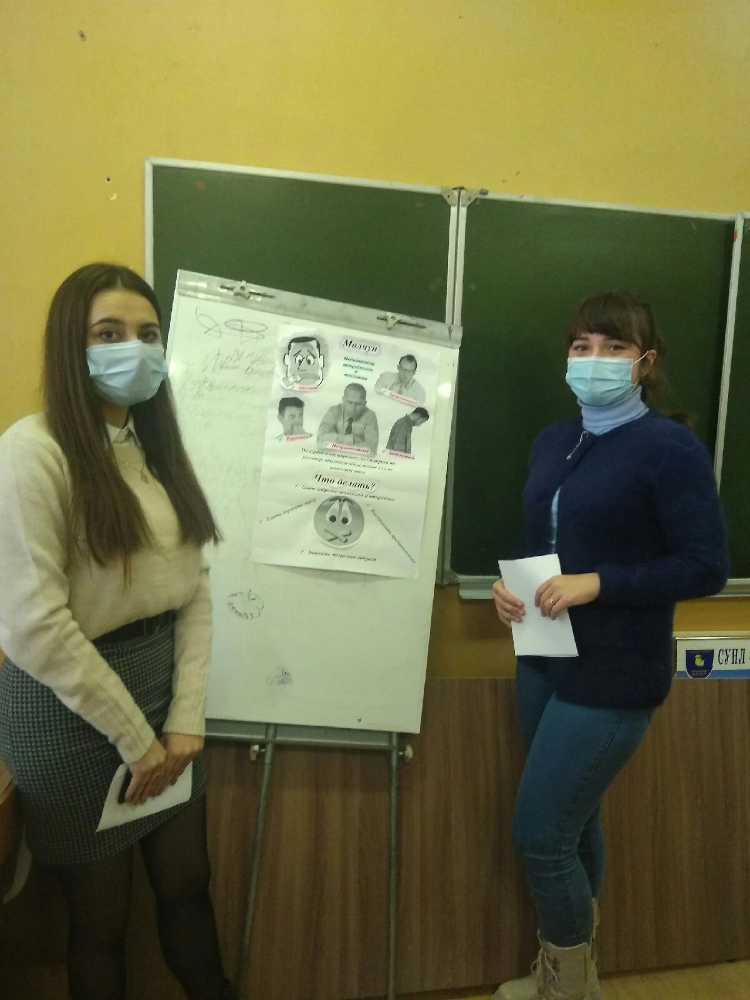
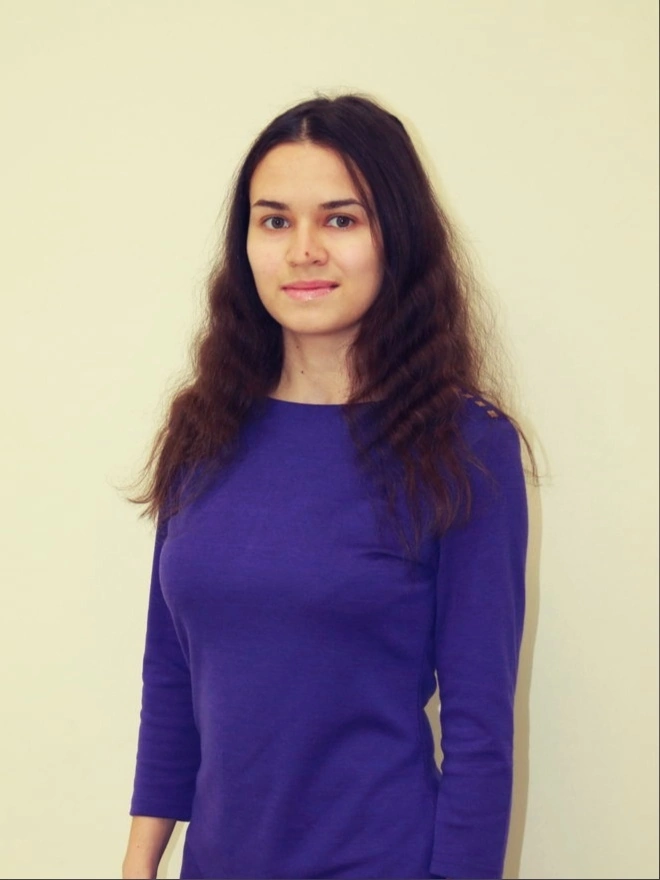
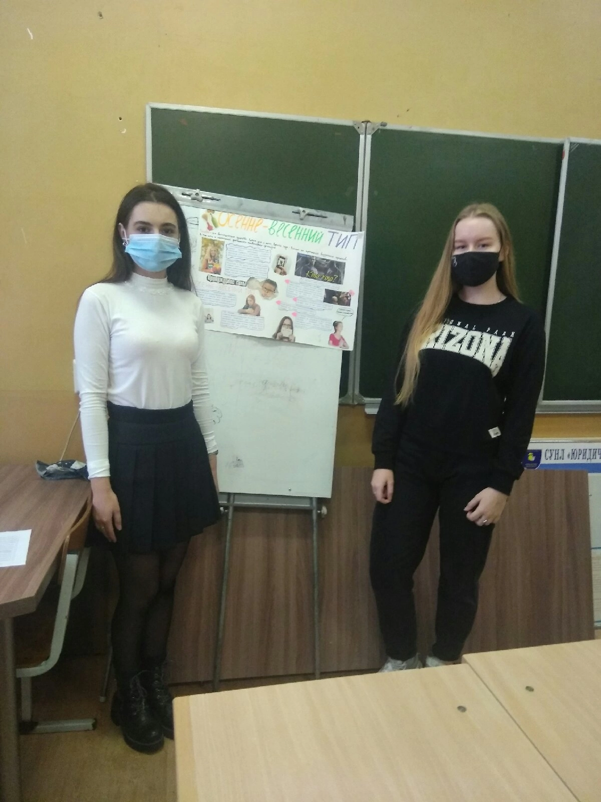
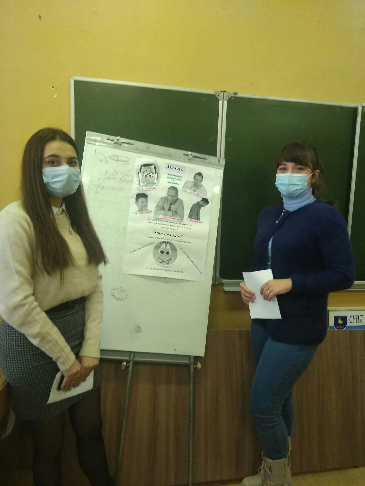
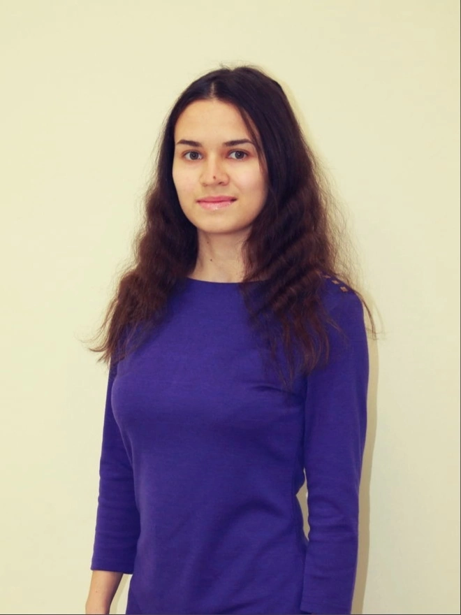